Лабораторная работа №1. Работа с сокетами
Цель работы
Изучить принципы клиент-серверного взаимодействия с использованием сокетов. Получить практические навыки работы с протоколами UDP и TCP, познакомиться с устройством HTTP, а также реализовать многопользовательское взаимодействие с использованием потоков.
В ходе лабораторной работы были выполнены следующие задания:
- Обмен сообщениями по UDP.
- Вычисление площади трапеции через TCP.
- Раздача HTML-страницы по HTTP.
- Многопользовательский чат на сокетах.
- Простой веб-сервер с обработкой GET и POST запросов.
Задание 1. Обмен сообщениями по UDP
Описание
В первом задании реализовано клиент-серверное взаимодействие с использованием протокола UDP.
UDP работает без предварительного установления соединения между клиентом и сервером. Клиент отправляет серверу сообщение Hello, server, сервер выводит его и отправляет клиенту ответ Hello, client.
Для создания UDP-сокета используется:
socket.socket(socket.AF_INET, socket.SOCK_DGRAM)
где:
AF_INET— использование IPv4;SOCK_DGRAM— использование UDP.
Сервер
import socket
HOST = "localhost"
PORT = 8080
server_socket = socket.socket(socket.AF_INET, socket.SOCK_DGRAM)
server_socket.bind((HOST, PORT))
print(f"UDP-сервер запущен на {HOST}:{PORT}")
data, client_address = server_socket.recvfrom(1024)
message = data.decode()
print(f"Сообщение от клиента: {message}")
response = "Hello, client"
server_socket.sendto(response.encode(), client_address)
server_socket.close()
Клиент
import socket
HOST = "localhost"
PORT = 8080
client_socket = socket.socket(socket.AF_INET, socket.SOCK_DGRAM)
message = "Hello, server"
client_socket.sendto(message.encode(), (HOST, PORT))
data, server_address = client_socket.recvfrom(1024)
response = data.decode()
print(f"Ответ от сервера: {response}")
# закрываем сокет
client_socket.close()
Результат
После запуска сервер получает сообщение:
Сообщение от клиента: Hello, server
Клиент получает ответ:
Ответ от сервера: Hello, client
Результат: Клиент и сервер успешно обмениваются сообщениями по протоколу UDP.
Скриншот работы
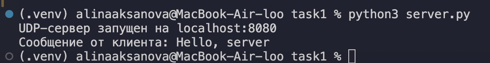
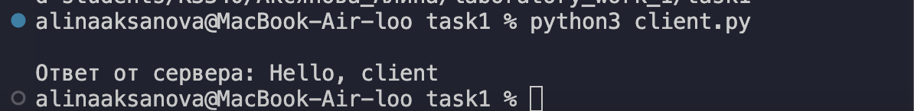
Задание 2. Вычисления через TCP
Описание
Во втором задании реализовано клиент-серверное взаимодействие с использованием протокола TCP
Мною выпонялся вариант №3, севрев вычислял площадь трапеции
Площадь трапеции определяется по формуле:
S = (a + b) · h / 2
где:
a— первое основание трапеции;b— второе основание трапеции;h— высота трапеции.
В отличие от UDP, TCP требует предварительного установления соединения между клиентом и сервером.
Для создания TCP-сокета используется:
socket.socket(socket.AF_INET, socket.SOCK_STREAM)
Сервер
import socket
HOST = "localhost"
PORT = 8081
server_socket = socket.socket(socket.AF_INET, socket.SOCK_STREAM)
server_socket.bind((HOST, PORT))
server_socket.listen(1)
print(f"TCP-сервер запущен на {HOST}:{PORT}")
while True:
client_connection, client_address = server_socket.accept()
print(f"Подключение от {client_address}")
data = client_connection.recv(1024).decode()
a, b, h = map(float, data.split())
area = (a + b) * h / 2
client_connection.sendall(str(area).encode())
client_connection.close()
Клиент
import socket
HOST = "localhost"
PORT = 8081
client_socket = socket.socket(socket.AF_INET, socket.SOCK_STREAM)
client_socket.connect((HOST, PORT))
a = float(input("Введите первое основание трапеции: "))
b = float(input("Введите второе основание трапеции: "))
h = float(input("Введите высоту трапеции: "))
message = f"{a} {b} {h}"
client_socket.sendall(message.encode())
data = client_socket.recv(1024).decode()
print(f"Площадь трапеции: {data}")
client_socket.close()
Пример работы
При вводе:
Первое основание: 5
Второе основание: 7
Высота: 3
результат:
Площадь трапеции: 18.0
Результат: Клиент передаёт параметры трапеции серверу по TCP. Сервер выполняет вычисление и возвращает результат клиенту.
Скриншот работы
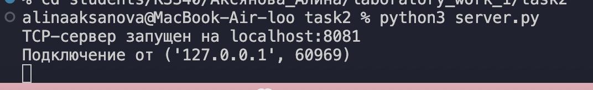
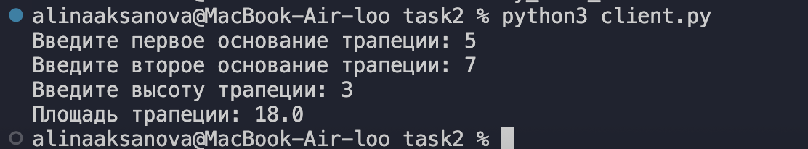
Задание 3. Раздача HTML-страницы по HTTP
Описание
В третьем задании реализован простой HTTP-сервер с использованием библиотеки socket.
В качестве клиента используется браузер. После подключения браузер отправляет HTTP-запрос. Сервер получает запрос, считывает содержимое файла index.html, формирует HTTP-ответ и отправляет его браузеру.
HTTP-ответ содержит:
| Часть | Назначение |
|---|---|
HTTP/1.1 200 OK |
Статус успешного выполнения запроса |
Content-Type |
Тип передаваемых данных |
Content-Length |
Размер тела ответа |
Connection: close |
Закрытие соединения после ответа |
| Тело ответа | Содержимое HTML-страницы |
Сервер
import socket
HOST = "localhost"
PORT = 8082
server_socket = socket.socket(socket.AF_INET, socket.SOCK_STREAM)
server_socket.bind((HOST, PORT))
server_socket.listen(5)
print(f"HTTP-сервер запущен на http://{HOST}:{PORT}")
while True:
client_connection, client_address = server_socket.accept()
print(f"Подключение от {client_address}")
request = client_connection.recv(1024).decode()
print(f"Запрос клиента:\n{request}")
with open("index.html", "r", encoding="utf-8") as file:
html_content = file.read()
html_bytes = html_content.encode("utf-8")
http_headers = (
"HTTP/1.1 200 OK\r\n"
"Content-Type: text/html; charset=UTF-8\r\n"
f"Content-Length: {len(html_bytes)}\r\n"
"Connection: close\r\n"
"\r\n"
)
client_connection.sendall(http_headers.encode() + html_bytes)
client_connection.close()
HTML-страница
Файл index.html:
<!DOCTYPE html>
<html lang="ru">
<head>
<meta charset="UTF-8">
<title>Лабораторная работа №1</title>
</head>
<body>
<h1>Лабораторная работа №1</h1>
<h2>Задание 3</h2>
<p>Эта HTML-страница получена с сервера через HTTP.</p>
</body>
</html>
Пример HTTP-запроса
При переходе в браузере на адрес http://localhost:8082 сервер получает запрос вида:
GET / HTTP/1.1
Host: localhost:8082
Результат:
Сервер успешно считывает HTML-код из отдельного файла index.html и передаёт его браузеру в теле HTTP-ответа.
Скриншот работы
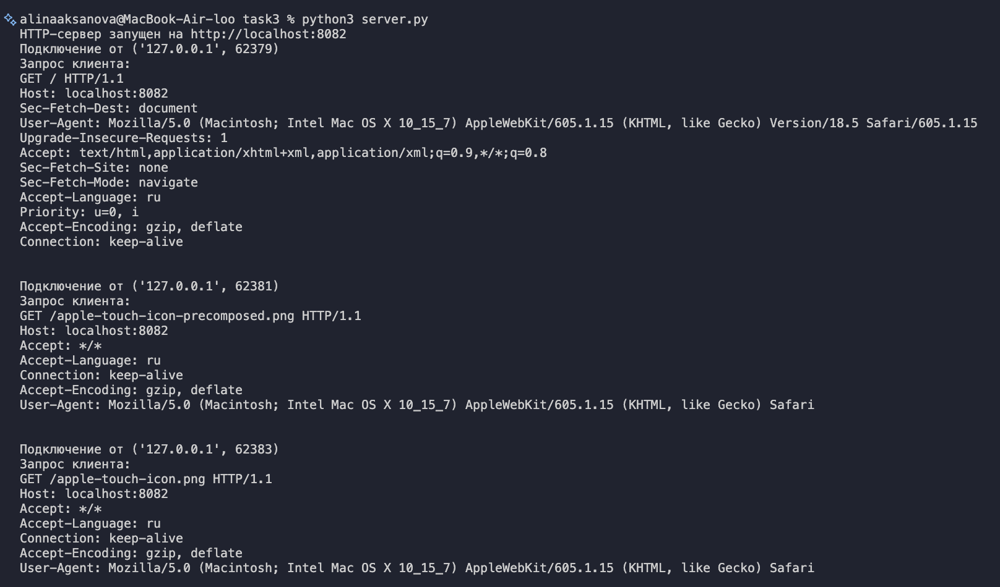
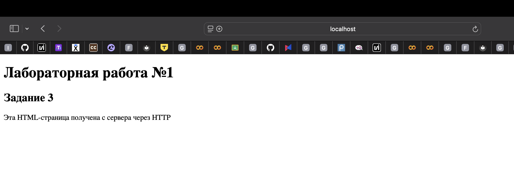
Задание 4. Многопользовательский чат
Описание
В четвёртом задании реализован многопользовательский чат с использованием протокола TCP и библиотеки threading
Используется один серверный скрипт и один клиентский скрипт. Для подключения нескольких пользователей один и тот же client.py запускается в нескольких терминалах
Каждый пользователь вводит имя, которое используется для его идентификации в чате
Использование потоков
Для каждого подключённого пользователя сервер создаёт отдельный поток:
thread = threading.Thread(
target=handle_client,
args=(client_connection, client_address)
)
thread.start()
Это позволяет серверу одновременно работать с несколькими клиентами
Хранение подключений
Активные подключения сохраняются в списке:
clients = []
Для рассылки сообщений используется функция:
def broadcast(message, sender_connection):
for client in clients:
if client != sender_connection:
client.sendall(message)
Сообщение отправляется всем подключённым клиентам, кроме его отправителя
Получение сообщений на клиенте
На стороне клиента отдельный поток используется для постоянного получения сообщений от сервера:
def receive_messages():
while True:
try:
message = client_socket.recv(1024)
if not message:
break
print(message.decode())
except ConnectionError:
break
receive_thread = threading.Thread(target=receive_messages)
receive_thread.start()
Основной поток при этом используется для ввода и отправки сообщений
Выход из чата
Для выхода используется команда:
/exit
После её отправки соединение клиента закрывается, а сервер удаляет пользователя из списка активных подключений
Результат: Реализован многопользовательский TCP-чат. Пользователи идентифицируются по имени, могут обмениваться сообщениями и выходить из чата
Скриншот работы
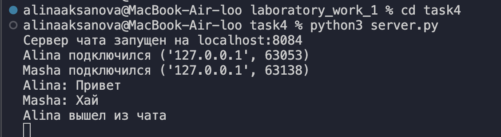
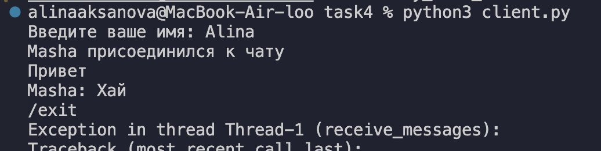
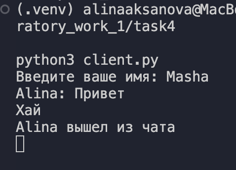
Задание 5. Простой веб-сервер GET/POST
Описание
В пятом задании реализован простой HTTP-сервер для ведения журнала оценок
Сервер самостоятельно разбирает HTTP-запросы и поддерживает методы GET и POST
Хранение данных
Для хранения оценок используется словарь:
grades = {}
Название дисциплины является ключом, а значением является список всех оценок по этой дисциплине.
Пример:
{
"Математика": ["5", "4", "3"],
"Физика": ["5"]
}
Такой способ хранения позволяет группировать оценки по предметам, а не создавать отдельную запись для каждой оценки.
HTML-форма
Для добавления оценки используется форма:
<form method="POST" action="/">
<label>
Дисциплина:
<input type="text" name="subject" required>
</label>
<br><br>
<label>
Оценка:
<input type="number" name="grade" min="1" max="5" required>
</label>
<br><br>
<button type="submit">Добавить оценку</button>
</form>
Обработка POST-запроса
Полученные от браузера данные разбираются с помощью parse_qs:
form_data = parse_qs(body)
subject = form_data.get("subject", [""])[0]
grade = form_data.get("grade", [""])[0]
После этого оценка добавляется в соответствующую дисциплину:
if subject and grade:
if subject not in grades:
grades[subject] = []
grades[subject].append(grade)
Получение тела HTTP-запроса
Размер тела POST-запроса определяется по заголовку Content-Length:
content_length = 0
for header in headers.decode("utf-8").split("\r\n"):
if header.lower().startswith("content-length:"):
content_length = int(header.split(":")[1].strip())
Если первый вызов recv() не получил всё тело запроса, сервер продолжает чтение:
while len(body) < content_length:
data = client_connection.recv(4096)
if not data:
break
body += data
Это необходимо, так как TCP представляет собой поток байтов и один вызов recv() не гарантирует получение всего HTTP-запроса
Пример результата
После добавления нескольких оценок журнал может иметь следующий вид:
Математика: 5, 4, 3
Физика: 5
Web-программирование: 4, 5
Результат: Сервер обрабатывает GET и POST запросы. Оценки сохраняются в памяти сервера и группируются по названию дисциплины.
"Хранение данных":
Оценки хранятся в оперативной памяти в словаре grades. После остановки сервера данные удаляются.
Скриншот работы
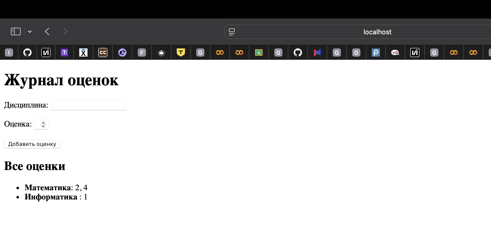
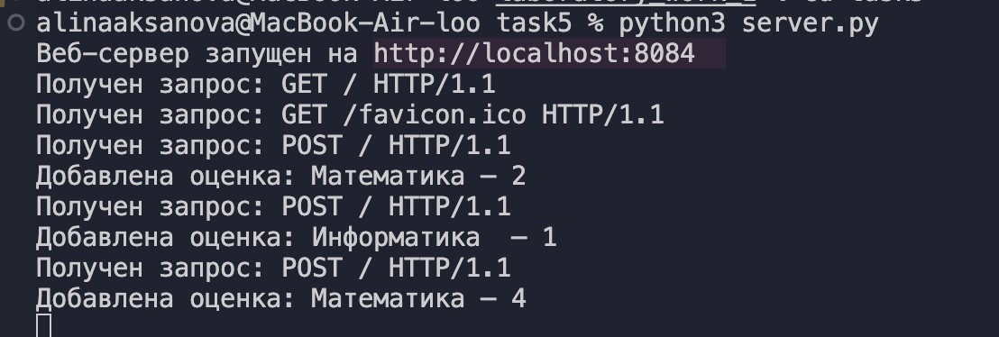
Вывод
В ходе лабораторной работы были изучены основные принципы клиент-серверного взаимодействия с использованием сокетов в Python
Был реализован обмен сообщениями по протоколам UDP и TCP. Были изучены основные методы библиотеки socket: bind(), listen(), accept(), connect(), sendto(), recvfrom(), sendall() и recv().
Также был реализован простой HTTP-сервер и рассмотрена структура HTTP-запросов и ответов. На практике были использованы методы GET и POST, HTTP-заголовки и тело запроса.
Для реализации многопользовательского чата была использована библиотека threading, которая позволила обрабатывать подключения нескольких пользователей в отдельных потоках.
В результате работы были получены практические навыки создания простых сетевых приложений и работы с клиент-серверной архитектурой на Python.